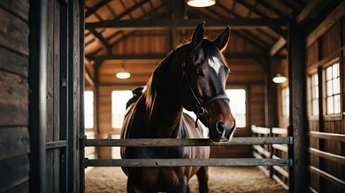
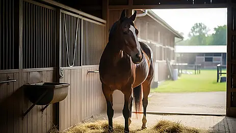
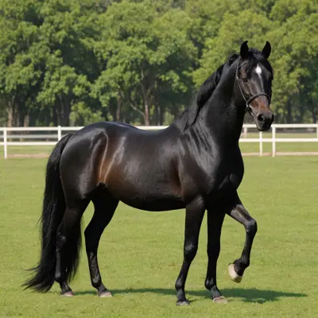
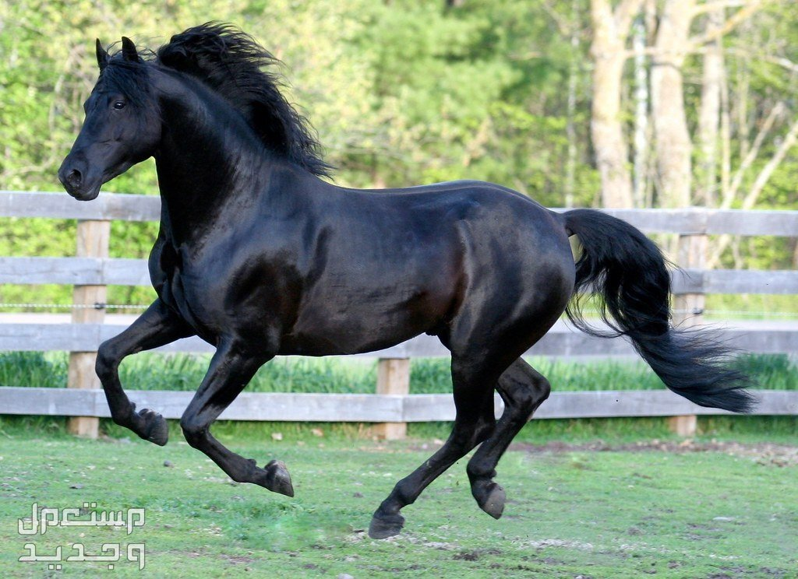

| السلالة | عربي أصيل (صقلاوي) |
|---|---|
| العمر | 4 سنوات |
| المهارة الرئيسية | الهدوء والطاعة التامة |
| اللون | أدهم (أسود) لامع |
تتميز الفرس ليلى بجمالها الساحر ولونها النادر الذي يعكس نقاء سلالتها العربية. تُعرف ليلى بشخصيتها الهادئة والودودة، مما يجعلها المفضلة لدى المبتدئين والأطفال في الإسطبل، حيث تمنح الراكب شعوراً بالأمان والراحة.
تمتلك ليلى قدرة عالية على التعلم والطاعة في التدريبات، وقد شاركت في العديد من عروض الجمال وحصلت على تقييمات ممتازة بفضل تناسق قوامها ورقبتها المقوسة المميزة.